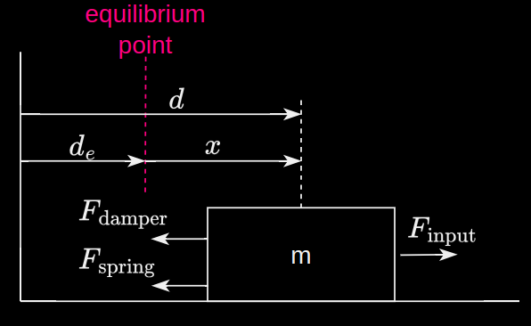

Solving a control problem also involves solving the system identification problem and the simulation problem.
Wheeled cart attached to a wall with a spring and damper, rolling without friction on a floor.
A cart system can be described mathematically using equations of motion in the form of differential equations. The mathematical model ends up being a 2nd ODE:
$$\begin{align*}
m\ddot{x}(t) &= F_{input}(t) - F_{damper}(t) - F_{spring}(t) \\
m\ddot{x}(t) &+ b\dot{x}(t) + kx(t) - F_{input}(t) = 0 \\
\end{align*}$$
Given the external input or the excitation into the model, i.e. the the force applied to the cart, the ODE can be solved to get the cart's position over time $x(t)$. Unknown terms (mass, spring constant and damping coefficient) are written as variables.

Free body diagram of the cart system
Mathematical model of the cart system
Writing out equations of motion is part of system identification and is the white box method . Finding unknown variables requires system testing and is part of the black box method.
A differential equation is great for solving for the response of a system but it doesn't lend itself very well to